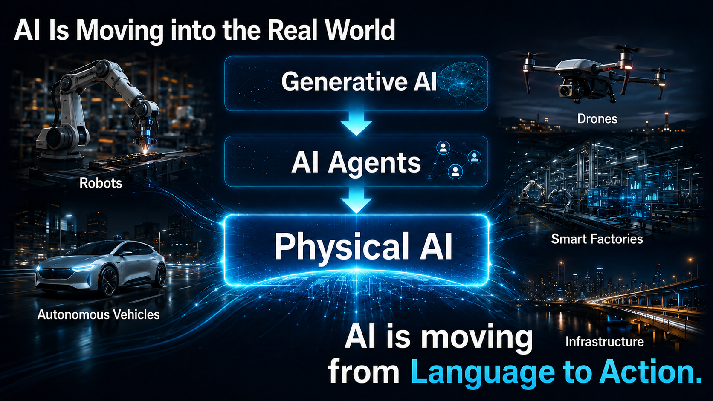
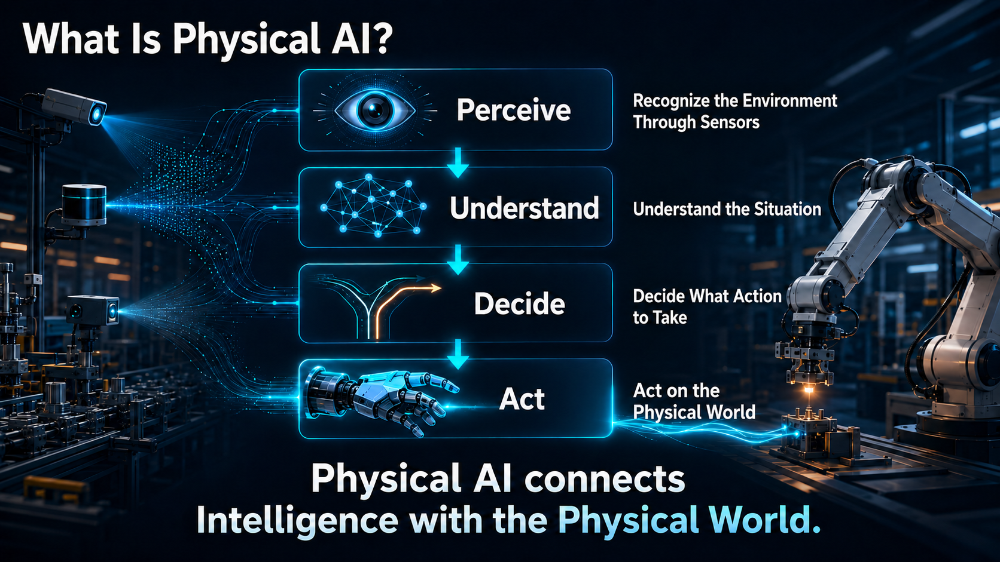
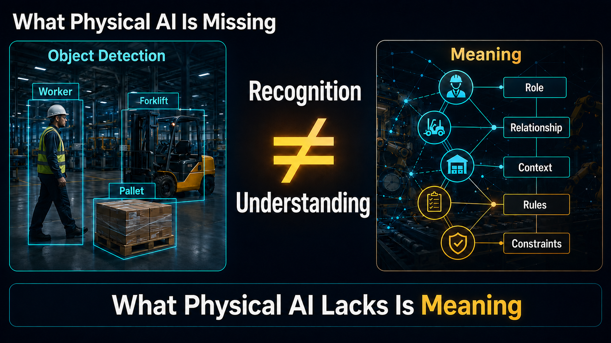
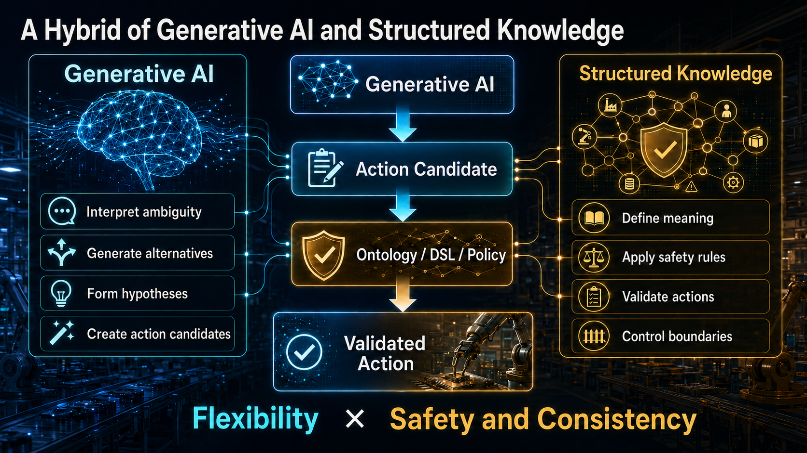
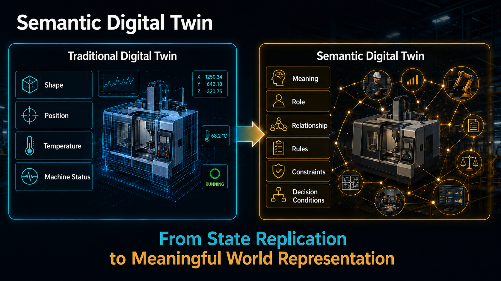
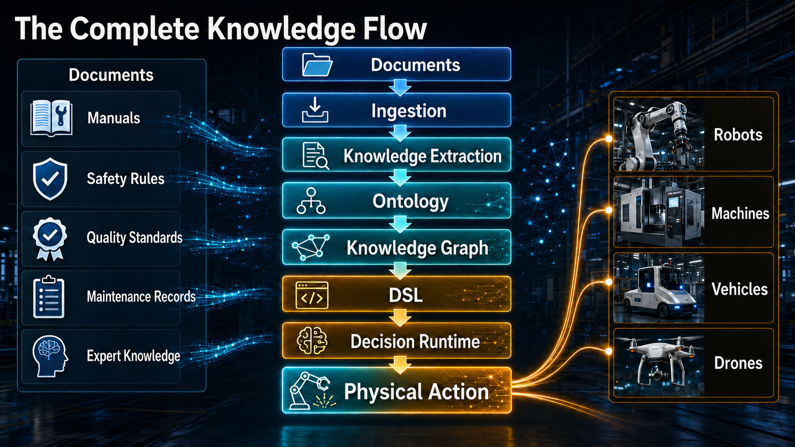
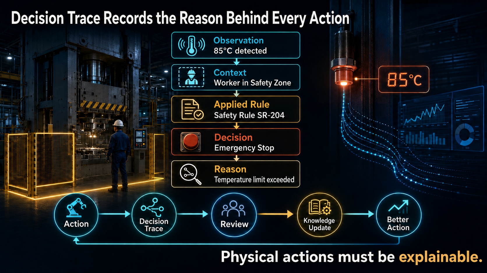
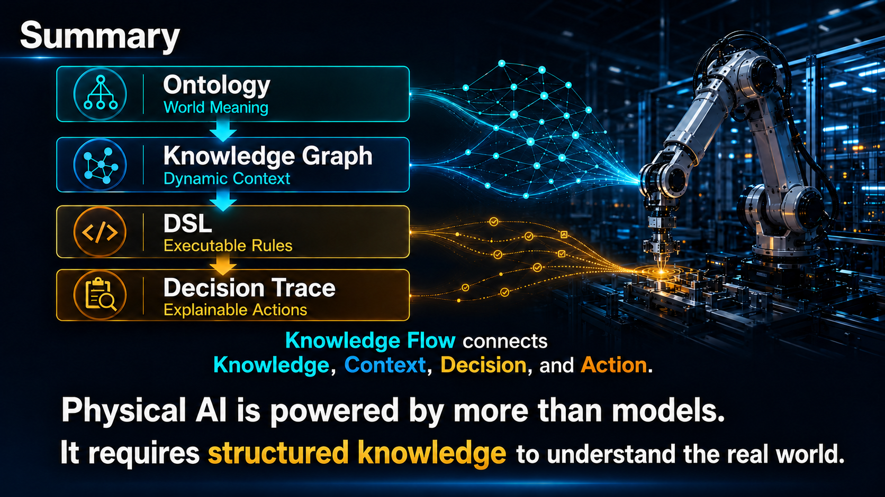

Physical AI is not only a model that senses and moves. It is a runtime that turns physical state into accountable action.
As AI moves beyond generating text and images into observing, deciding, and acting through robots, machines, vehicles, and drones, a basic loop repeats everywhere it operates: observation, understanding, decision, action, and feedback. Every pass through that loop carries physical consequence — safety, authority, responsibility, and the ability to explain what happened and why. Chinoba treats Physical AI not as a single model but as an execution substrate that binds meaning, state, knowledge, policy, execution authority, and Decision Trace into one accountable system.
Physical AI spans robots, industrial equipment, vehicles, drones, and sensor networks — any system where intelligence produces movement or force in the world rather than only text or pixels. Recognizing an object or predicting a value is not the same as deciding to act on it. This inquiry is about the structure that has to exist between the two.

Whatever the platform — a mobile robot, a production line, a delivery vehicle, a drone — the same basic loop repeats: the system perceives its environment, forms an understanding of the situation, decides what to do, acts on the physical world, and receives feedback that updates the next cycle.
Observation
↓ Understanding
↓ Decision
↓ Action
↓ Feedback
Each stage looks simple in a diagram. In practice, each is where physical-world AI most often fails — not because perception is weak, but because the steps between perception and action are collapsed into a single inference call.
Actions taken in physical space are frequently irreversible, safety-relevant, and operationally consequential. A system that moves a robot arm, opens a valve, or re-routes a vehicle needs more than an accurate model — it needs permission, context, and a record of why it acted.
Chinoba treats these four requirements as architecture, not afterthoughts — expressed through the Semantic Digital Twin, the Somatic Digital Twin, Chinoba PF's Ontology, Knowledge Graph, DSL, and Decision Trace, described below.

The new English practical guide leads this line of inquiry. Below it are the Chinoba books, videos, and essays that build the Semantic Digital Twin and Somatic Digital Twin picture used throughout this page.
The English practical guide behind this page's architecture — how Ontology, Knowledge Graph, DSL, and Decision Trace combine inside Chinoba PF to build the Semantic Digital Twin that lets Physical AI understand the real world and act on it safely.
View on Amazon → ASIN B0HFH4QXYS · Kindle · Masao WatanabeNeighboring practical guides that build the Ontology, Knowledge Graph, DSL, Decision Trace, and Trust Infrastructure this page draws on.
Visual introductions to Physical AI and the Semantic Digital Twin that lets it reason about the real world.
Long-form essays behind this page's argument — Physical AI, the Decision Trace Model, and the sensor-to-decision boundary.
A sensor reading or an object-detection result is not, by itself, something a system can safely act on. The same detection can call for entirely different responses depending on where it occurs, what task is underway, which equipment is involved, how dangerous the situation is, who is authorized to act, and how current the information is.
"Worker," "forklift," and "pallet" are labels a vision model can produce reliably. None of them says whether the worker is authorized to be there, whether the forklift is mid-task, or whether the pallet is load-bearing. Meaning comes from connecting the detection to role, relationship, context, and rule — not from the detection itself.
Generative and perception models are good at exactly this: interpreting ambiguity, proposing alternatives, and forming hypotheses. What they produce is a candidate action, not an authorized one.
A candidate action becomes an executable decision only after it passes through what Chinoba calls the boundary layer: applicable knowledge and rules, the current context, safety policy, and — where required — a Human Gate and explicit Execution Authorization.
Candidate action
is not
a decision to act.
Wiring a model's output directly to an equipment command, without this layer, is the single most common failure mode in physical AI systems — and the one this research line exists to close.
Object detection identifies a worker, a forklift, and a pallet. Understanding requires knowing their role, their relationship, the governing rules, and the current constraints — the layer recognition alone cannot supply.

Generative AI contributes flexibility — interpreting ambiguity and proposing alternatives. Structured knowledge contributes safety and consistency — defining meaning, applying rules, validating actions, and controlling boundaries. Physical AI needs both, in that order.

A Semantic Digital Twin is not a 3D model of a physical asset, and not a copy of its telemetry. It is the layer that gives that state meaning — connecting entities, relationships, context, knowledge, and decision options into a form a runtime can reason over.

Equipment, robots, workers, areas, materials, and tasks — the things a decision can be about.
Location, ownership, dependency, authorization, and containment — how those things connect to one another.
Operating state, time, environment, task progress, and confidence — the situation as it stands right now.
Specifications, procedures, safety policies, and constraints that apply to the situation.
Goals, candidate actions, applicable boundaries, and the explanation a decision will need to carry.
Ontology defines what exists in the physical environment and how those things relate — factory, production line, equipment, worker, safety zone — giving Physical AI a shared vocabulary instead of ad hoc labels.
The Knowledge Graph instantiates that vocabulary as a live, queryable model: which press is running which recipe, which worker is in which zone, which past incident applies. It is a dynamic representation of the physical world as it changes, not a static database.
The DSL turns encoded knowledge into executable conditions — a temperature threshold crossed while a worker is inside a safety zone requires the equipment to stop and a manager to be notified, with human approval required to restart. This is how meaning becomes something a runtime can enforce, not just describe.
Decision Trace records which entities, relationships, rules, and context produced a given decision — so every action the Semantic Digital Twin informs remains explainable after the fact.
Ontology names it.
Knowledge Graph tracks it.
DSL enforces it.
Decision Trace explains it.
Alongside the Semantic Digital Twin, Chinoba treats the body state of a physical agent — a robot, a piece of equipment, a vehicle, any actor with a physical form — as a distinct, time-tracked model in its own right: the Somatic Digital Twin.
Where a Semantic Digital Twin asks what a situation means, the Somatic Digital Twin asks a narrower, more immediate question: what state is this body in right now, and what can it safely do? It follows a machine's physical condition and operating health across time rather than at a single instant.
Body state changes on its own timeline — batteries drain, joints wear, sensors drift out of calibration — independent of what a task or a rulebook says should happen. Modeling it as its own layer keeps "is this asset actually capable right now" separate from "is this action allowed," so neither question quietly substitutes for the other.
Temperature, vibration, load, battery, wear, position, posture, and general health.
What the asset can safely do right now, given its current condition — not its nameplate specification.
Connectivity, sensor freshness, calibration status, and any active fault state.
Location, nearby people and equipment, and weather or site conditions the body operates within.
Observed history, maintenance events, degradation, recovery, and anomaly signals.
Neither twin is sufficient alone. The Somatic Digital Twin describes the body — its state, its capability envelope, its health, its limits. The Semantic Digital Twin describes what that state means — what it relates to, and under which rules, goals, and authorizations it should be interpreted. Physical AI needs both to move from "we can see the machine" to "we can decide, safely, whether this action should happen now."
Somatic Digital Twin
the body: condition, capability, health
Semantic Digital Twin
the meaning: relationships, rules, authority
Together
perception becomes an accountable decision to act
This is the architecture the rest of the page has been building toward — the path from a raw physical event to an action a person, auditor, or reviewer could later verify as reasonable, authorized, and correctly executed.

Interlocks, emergency stops, and hard safety limits sit outside this decision pipeline by design. Physical AI proposes and requests; it does not have the authority to disable or override the mechanisms that exist specifically to contain it when something goes wrong.
Capability and permission are not the same thing. A robot arm being physically able to move into a space is not the same as it being authorized to move there right now, under the current rules, with the current people present.
Every decision in this pipeline should be reconstructable end to end — from the original observation and the context that surrounded it, through the rules that were applied and the authority that approved it, to the execution itself and its outcome.
Feedback from that outcome runs in two directions: it updates the Somatic and Semantic Digital Twins' picture of current operating reality, and it updates the policies, thresholds, and trust levels that shape future decisions.
Capability answers
what an asset can do.
Authorization answers
what it may do now.
An observation, the context it was read against, the rule that was applied, the decision that followed, and the reason behind it — recorded together, then reviewed, so the next decision improves on the last.

The same architecture applies wherever AI acts through a physical body — only the entities, rules, and stakes change. In every case, value comes from combining what the Somatic Digital Twin knows about the asset with what the Semantic Digital Twin knows about the situation, and preserving both in a Decision Trace.
Equipment condition and process context meet safety rules and quality constraints, so an authorized adjustment — not just a suggested one — reaches the press or the line.
A robot's battery, load, and location combine with aisle state and access authority to produce a route decision a warehouse can trust and later review.
Degradation signals meet asset knowledge and maintenance history, turning a raw anomaly into an accountable intervention with a documented reason.
Environmental conditions and operational boundaries govern autonomous movement, with human escalation available whenever confidence or authority runs out.
Runtime-oriented building blocks for Physical AI — decision execution, traceable action, graph-based world models, and signal analytics across sensor networks and the Somatic and Semantic Digital Twins.
A growing archive of architectural sketches for Physical AI, the Semantic Digital Twin, and the Chinoba PF knowledge stack that extend the page rather than repeat it.

Physical AI is not only giving AI a body. It is understanding the state of the physical world, binding that state to meaning, constraint, and responsibility, and leaving every action as a record that can be learned from. Somatic Digital Twin. Semantic Digital Twin. Knowledge Flow. Trust Infrastructure. Decision Trace. This is the architecture Chinoba is building toward.
{kind=link}
{kind=link}
{kind=link}
{kind=link}
{kind=link}
{kind=link}
{kind=link}
{kind=link}
{kind=link}
{kind=link}
{kind=link}
{kind=link}
{kind=link}
{kind=link}
{kind=link}